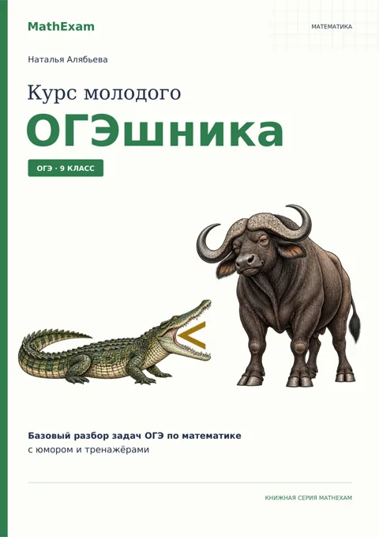
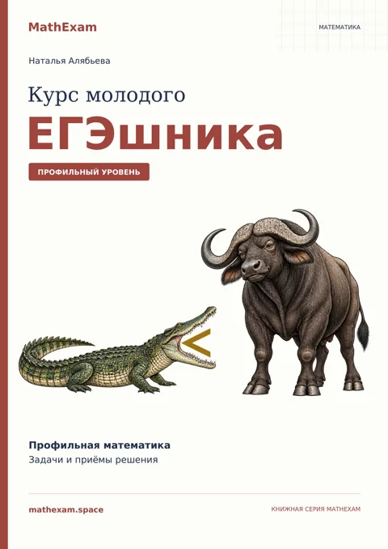
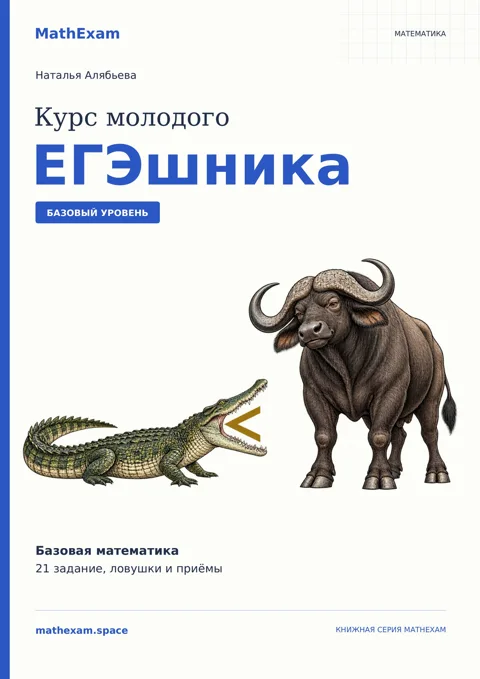

Курс молодого ОГЭшника
Начните с разминки по дробям и процентам. Затем переходите к графикам, вероятности и геометрии. Для задач второй части есть самостоятельная работа с решениями.
Тренажёры ОГЭНаталья Алябьева разбирает задания экзамена 2027 года и предлагает решить похожие самостоятельно. Выберите свой экзамен — книгу можно читать онлайн или скачать целиком.

Начните с разминки по дробям и процентам. Затем переходите к графикам, вероятности и геометрии. Для задач второй части есть самостоятельная работа с решениями.
Тренажёры ОГЭ
Разберите все 19 номеров. На примерах второй части проследите, как отбирать корни, оформлять доказательство и обосновывать ответ в задаче с параметром.
Тренажёры профильного ЕГЭ
Пройдите 21 номер от бытовых расчётов до задач на числа. В каждой главе разберите типичную ошибку, решите новый пример и проверьте себя по ответам.
Тренажёры базового ЕГЭ